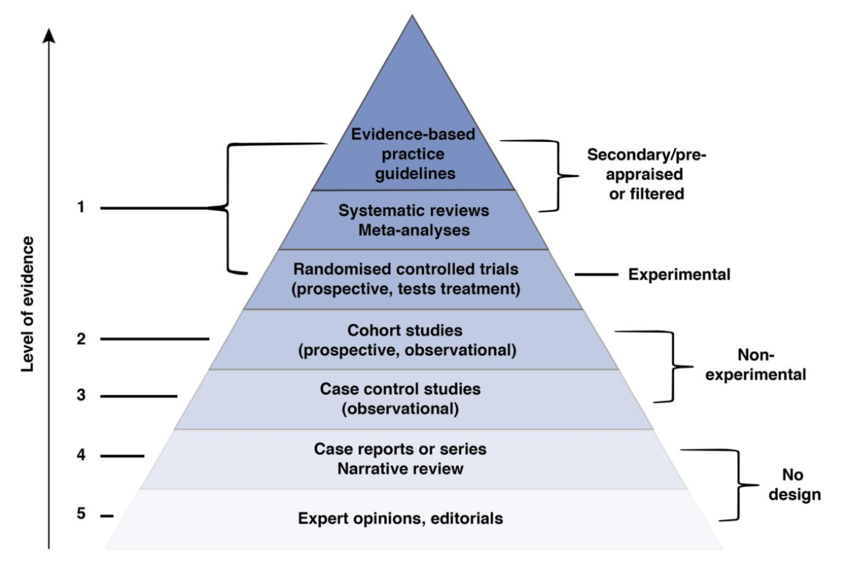

timeline
title Fases Revisión Sistemática
section Selección estudios.
Pregunta : Creación de la pregunta de investigación.
: Determinación de los criterios de inclusión / exclusión.
Bases de datos : Selección de las bases de datos.
: Creación de ecuaciones de búsqueda.
Extracción: Extracción de los estudios localizados.
section Determinación de los estudios.
Duplicados : Eliminación de los estudios duplicados.
Cribado por tema : Eliminación por título y resumen.
: Eliminación por lectura de texto completo.
Cribado por método : Lectura crítica de los estudios.
: Determinación de sesgo de los estudios.
section Sintesis de los estudios.
Agrupación : Agrupación de los estudios por temáticas.
Síntesis : Creación de tablas resumen de los estudios.
Revisiones Sistemáticas
Comencemos con las Revisiones Sistemáticas. Qué son, porque son importantes y cuales con los pasos e interpretaciones que debemos hacer sobre ellas con los temas que trataremos en esta sección.
Entendiendo las Revisiones Sistemáticas
Todos hemos oído hablar alguna vez de la pirámide de la evidencia. En dicha pirámide quedan recogidos, de alguna manera, los distintos tipos de estudios científicos que arrojan evidencia a la práctica clínica de una forma jerarquizada.
Así pasaríamos de un nivel básico (nivel de baja evidencia) como son las opiniones de expertos hasta un nivel de evidencia muy alto como son las guías de práctica clínica. Si te fijas bien, podrás ver como las Revisiones sistemáticas y los meta-análisis son dos los estudios con mayor evidencia. Y no es para menos ya que son capaces de recoger, resumir y CONJUNTAR la evidencia de muchos estudios.

Debido a estas razones, las revisiones sistemáticas y los meta-análisis representan dos de los estudios más importantes. Ambos son complementarios y podríamos llegar a decir que uno es “el paso previo” del otro. Por ello se debe conocer bien su diferencia.
¿Qué son las revisiones sistemáticas?
Como su propio nombre indica, las revisiones sistemáticas son revisiones de artículos primarios. Es decir, se realiza una búsqueda de los artículos primarios publicados hasta la fecha sobre un tema en concreto y se resume los resultados que dichos artículos ofrecen. Sin embargo, se deben tener en cuenta ciertas características de los artículos primarios:
- La población sobra la que investigan.
- La muestra que han utilizado.
- Los datos recogidos.
¿Qué fases poseen las revisiones sistemáticas?
Las revisiones sistemáticas se diferencian de las revisiones bibliográficas en lo referente a su diseño protocolizado y estricto. Antes de la realización de cualquier revisión sistemática se debe redactar su protocolo y es muy recomendable su REGISTROS Y PUBLICACIÓN para asegurar la transparencia del mismo.
Existen organismos que tratan de protocolizar las revisiones sistemáticas. Uno de ellos es la organización PRISMA, la cual posee documentación e información acerca de como realizar una correcta revisión sistemática.
En cuanto al registro del protocolo de la revisión sistemática, encontramos la organización PROSPERO, destinada guardan un registro oficial de las revisiones sistemáticas que se están desarrollando.
Las fases de una revisión sistemática general
En general, podemos valorar las fases de una revisión sistemática en las siguientes fases:
- Determinación de la pregunta de investigación.
Durante esta fase se concreta la pregunta de investigación que queremos desarrollar. En general, en sanidad, nos encontramos interesados en 3 tipos de preguntas (explorar una realidad, predecir una realidad o inferir sobre una realidad). Debido a esto, la pregunta de investigación gozará de los siguientes componentes:
| Tipo de pregunta | Población | Intervención | Comparación | Resultado |
|---|---|---|---|---|
| Explorar | ✅ | ❌ | ❌ | ✅ |
| Predecir | ✅ | ❌ | ✅ | ✅ |
| Inferir | ✅ | ✅ | ✅ | ✅ |
- Determinación de los criterios de inclusión / exclusión.
Durante esta fase se indican los criterios de inclusión o exclusión que se usarán para valorar la inclusión de los estudios. En general, los criterios de inclusión / exclusión se fijan sobre tres ejes distintos:
Sobre los estudios: Año de publicación, lugar de publicación, tipo de estudio…
Sobre la población / intervención: Tipo de población, tipos de medición…
Sobre las características de la publicación: Libre acceso, idioma disponible…
- Selección de las bases de datos.
Durante esta fase se indican las bases de datos que se explorarán para la búsqueda de los estudios. En general, las bases de datos más utilizadas son:
| Nombre de la Base de Datos | Descripción / Enfoque Principal |
|---|---|
| MEDLINE/PubMed | Literatura biomédica y médica internacional |
| Embase | Biomedicina, farmacología y publicaciones europeas |
| Cochrane Library | Revisiones sistemáticas y evidencia clínica |
| Scopus | Cobertura multidisciplinar, incluye medicina y salud |
| CINAHL | Enfermería y disciplinas afines |
| LILACS | Literatura Latinoamericana y del Caribe en salud |
| SciELO | Revistas científicas de América Latina, España y Portugal |
| IME (Índice Médico Español) | Producción científica española en salud |
| MEDES | Medicina en español, revistas científicas españolas |
| IBECS | Índice Bibliográfico Español en Ciencias de la Salud |
| ENFISPO | Enfermería, fisioterapia y podología en español |
| DOCUMED | Documentación médica española |
| Europe PubMed Central (Europe PMC) | Artículos biomédicos y de ciencias de la vida en Europa |
| WHOSIS | Información estadística de la OMS |
| CDC Wonder | Datos estadísticos de salud pública de EE. UU. |
| HealthData.gov | Datos abiertos de salud del gobierno de EE. UU. |
| Global Health Data Exchange (GHDx) | Datos comparativos de salud global |
- Creación de las ecuaciones de búsqueda.
Durante esta fase se desarrollan las ecuaciones de búsqueda que se utilizarán para buscar en cada base de datos. La búsqueda se realiza a través de la combinación de los Descriptores de Ciencias de la Salud (DeCS) y de texto libre. Las partes de cada ecuación se unen a través de los conectores: “Y” (AND), “O” (OR) y “NO” (NOT).
- Identificación de los estudios.
Durante esta fase los estudios identificados se seleccionan y se descargan en archivos específicos (.ris, .txt, .csv) para realizar un posterior análisis de los mismos. A continuación, te presentamos un gestor bibliográfico para almacenar la información:
Cribado de los estudio
- Cribado por tema. El primer cribado de los estudios se realiza a través del tema. Primero se valora por título y resumen si los estudios seleccionados tratan el tema que se estudia, los estudios que no tratan el tema son eliminados. Tras ello, de los artículos restantes se valora el mismo criterios pero tras la lectura del texto completo.
- Cribado metodológico. El segundo cribado es metodológico. Para ello se hace uso de matrices de lectura crítica que valoran si los estudios cumplen con el rigor metodologíco suficiente como para ser incluidos. Finalmente, se valora el riesgo de sesgo metodológico que los estudios pudieran tener. A continuación, te presentamos dos web; una matrices de cribado metodológico y otra con herramientas para valorar el riesgo de sesgos:
¡Concepto importante!
La fase de selección y cribado de los estudios se realiza por pares, es decir, dos investigadores independientes realizan esta fase y, posteriormente, valoran si concuerdan. Si existiera disparidad en algún estudio, un tercer investigador valoraría la situación.
La revisión paritaria asegura la calidad de la revisión sistemática
- Categorización de los estudios.
Durante esta fase, y una vez que disponemos de los estudios finales a ser analizados, se realiza una categorización cualitativa de los estudios. Esta categorización puede ser realizada a través de decisiones clínicas; sin embargo, en la actualidad se puede realizar análisis mas sofisticados a través de mineria de texto. A continuación te presentamos una herramienta útil para tal análisis:
- Síntesis de los estudios.
Durante esta fase final, los resultados de los estudios incluidos se sintetizan. En general, se hace uso de una tabla en formato PICO(t):
| Año/Lugar/Autor | Objetivo | Muestra/método | Resultado |
|---|---|---|---|
A continuación, te presentamos el cronograma general a seguir para la realización de una revisión sistemática:
Herramientas de interés
Las fases de una revisión sistemática pueden ser realizadas manualmente. Sin embargo, podemos hacer uso de recursos que mejoren el flujo de trabajo. A continuación, presentamos alguna de ellas:
| Herramienta | Descripción | Enlace |
|---|---|---|
| Systematic Review Accelerator | Herramienta online con múltiples herramientas para acelerar la realización de las Revisiones Sistemáticas | link |
| TERA | Herramienta online con múltiples herramientas para acelerar la realización de las Revisiones Sistemáticas (nueva versión) | link |
| Rayyan | Plataforma online para la realización colaborativa de Revisiones sistemáticas | link |
| Cochrane Organization | Organización centrada en la realización de revisiones sistemáticas y meta-análisis | link |
A su vez, os presentamos librerias de R que puede ser utilizadas para la realización de revisiones sistemáticas:
| Librería | Descripción | Instalación |
|---|---|---|
| litsearchr | Librería centrada en mejorar la Ecuación de búsqueda | install.packages(“remotes”) install_github(“elizagrames/litsearchr”, ref=“main”) |
| revtools | Librería utilizada para automatizar revisiones sistemáticas | install.package(“revtools”) |
| metagear | Librería centrada en automatizar las revisiones sistemáticas | install.packages(“metagear”) |
| Robvis | Librería centrada en la creación de gráficos de riesgo de sesgo de Robs | install.packages(“robvis”) |
| PRISMA2020 | Librearía centrada en la creación del diagrama de flujo de PRISMA | install.packages(“PRISMA2020”) |
| bibliometrix | Librería centrada en la exploración y análisis de los estudios localizados | install.packages(“bibliometrix”) |